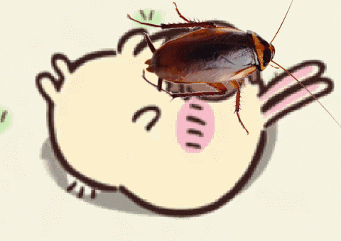

Lab 3: File Structures

The challenge of this lab is to create local file structures within our art101 folder, create and design a homepage and Lab 3 page for our website, and upload the files to Github.
Challenges
Since we already had a pre-existing file structure, I did not make any substantial edits to the file structure, but I did move some things around and familiarized myself specifically with folder heirarchies and parent/child files. I mostly toyed around with the structure and styling of my homepage. There were some features that I wanted to implement but involved JavaScript coding as well, specifically a slideshow display, but I look forward to implementing it in the future.
Results